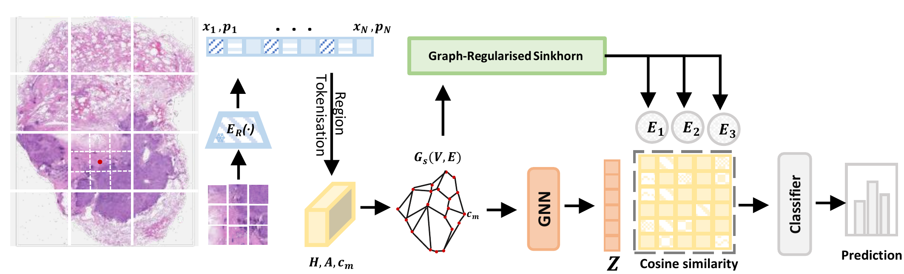
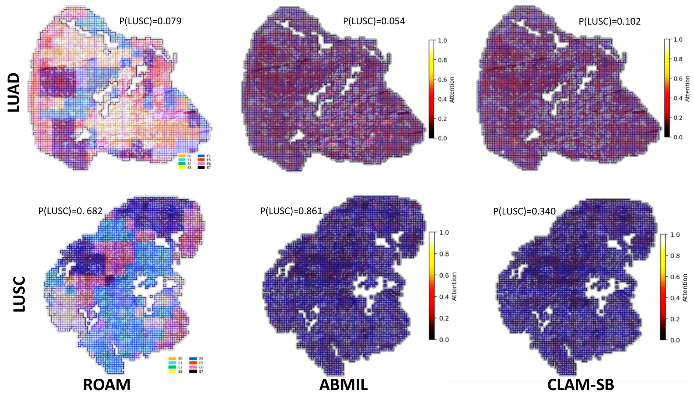
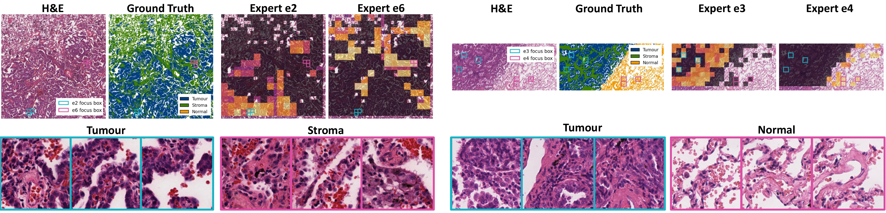
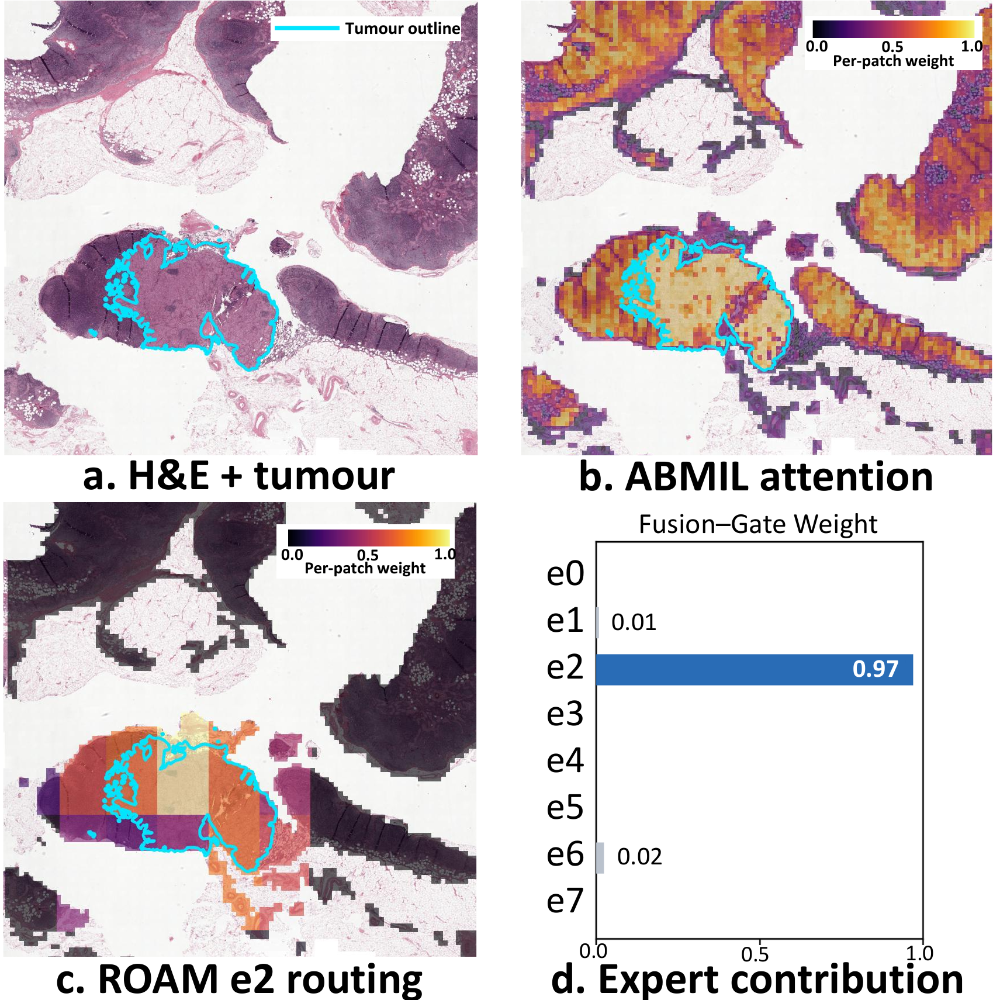

Abstract
Multiple Instance Learning (MIL) is the standard framework for gigapixel whole-slide image (WSI) classification in computational pathology. However, many MIL aggregators compress heterogeneous tissue regions through shared or globally parameterised pathways, limiting their ability to separate distinct diagnostic evidence within a slide. Mixture-of-Experts (MoE) models offer a natural way to specialise across heterogeneous regions, but conventional softmax routing can lead to imbalanced expert use and spatially fragmented assignments. We propose ROAM (Region-graph OptimAl-transport Mixture-of-experts), a spatially aware MoE-MIL aggregator that routes spatial region tokens to expert poolers through capacity-constrained entropic optimal transport. ROAM first compresses dense patch bags into local region tokens, so routing is performed over tissue neighbourhoods rather than isolated patches. It then uses Sinkhorn optimal transport with explicit expert-capacity marginals to assign region mass to experts, reducing reliance on a few dominant experts. Graph smoothing is applied during the Sinkhorn iterations to reduce fragmented assignments among neighbouring regions. The routed regions are aggregated by expert-specific gated-attention poolers and fused for slide-level prediction. Across four WSI benchmarks, 17 baselines, and two frozen pathology foundation-model encoders, ROAM ranks best or tied-best in 7 of 10 encoder–task settings. Interpretability analysis suggests that ROAM experts develop routing preferences for tumour, stroma, and normal tissue without tissue-level supervision. The code will be made available upon publication.
Method

Results
ROAM is compared with 17 baselines on four WSI tasks (TCGA NSCLC, BRCA, CRC and PANDA, with CPTAC as an independent external test set for NSCLC) using two frozen pathology foundation-model encoders, UNI2-h and GigaPath. ROAM's results (mean ± std over five folds):
| Encoder | NSCLC int. AUC | NSCLC ext. AUC | BRCA AUC | CRC AUC | PANDA QWK |
|---|---|---|---|---|---|
| UNI2-h | 0.976 ± 0.015 | 0.855 ± 0.010 | 0.905 ± 0.014 | 0.699 ± 0.030 | 0.917 ± 0.003 |
| GigaPath | 0.976 ± 0.016 | 0.845 ± 0.007 | 0.908 ± 0.020 | 0.673 ± 0.014 | 0.908 ± 0.008 |
Bold: best (or tied-best) among all 18 methods for that encoder; underlined: second best. Rankings use means rounded to three decimals; ties are descriptive and do not imply statistical equivalence. CRC is the main exception (best: ILRA, 0.702 with UNI2-h and 0.704 with GigaPath).
Ablation (NSCLC, UNI2-h)
| Configuration | int. AUC | ext. AUC |
|---|---|---|
| w/o routing GNN | 0.971 ± 0.022 | 0.836 ± 0.023 |
| w/o graph regularisation | 0.966 ± 0.019 | 0.813 ± 0.035 |
| softmax routing (no capacity constraint) | 0.964 ± 0.029 | 0.809 ± 0.045 |
| w/o OT-guided pooling (no OT modulation) | 0.966 ± 0.026 | 0.825 ± 0.015 |
| OT-guided pooling (detach routing weights) | 0.970 ± 0.019 | 0.820 ± 0.055 |
| ROAM (full) | 0.976 ± 0.015 | 0.855 ± 0.010 |
Replacing capacity-constrained OT with softmax routing lowers external AUC from 0.855 to 0.809; removing graph smoothing lowers it to 0.813.
Interpretability
- Spatially coherent expert routing. On external CPTAC slides, ROAM assigns regions to multiple experts that form contiguous territories.
- Morphology-associated expert specialisation. On WSSS4LUAD (7,885 annotated tiles from 22 regions of interest), trained only with slide-level labels: e2 and e3 rank tumour with AUCs of 0.65 and 0.69, e4 and e6 rank normal tissue with AUCs of 0.77 and 0.70, and e6 ranks stroma with an AUC of 0.64.
- Specialist experts guide prediction. On a CAMELYON-16 slide, expert e2 concentrates on the tumour outline and the fusion gate assigns 0.97 of its weight to e2.



BibTeX
@inproceedings{tian2026roam,
title = {Region-Graph Optimal Transport Routing for Mixture-of-Experts
Whole-Slide Image Classification},
author = {Tian, Xin and Lu, Jiuliu and Tsalik, Ephraim and
Wanders, Bart and Knoth, Colleen and Knight, Julian},
booktitle = {Proc. IEEE Int. Conf. Bioinformatics and Biomedicine (BIBM)},
year = {2026}
}